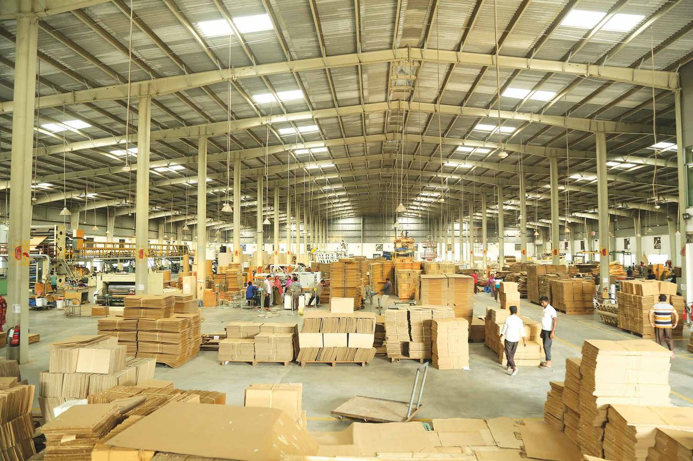
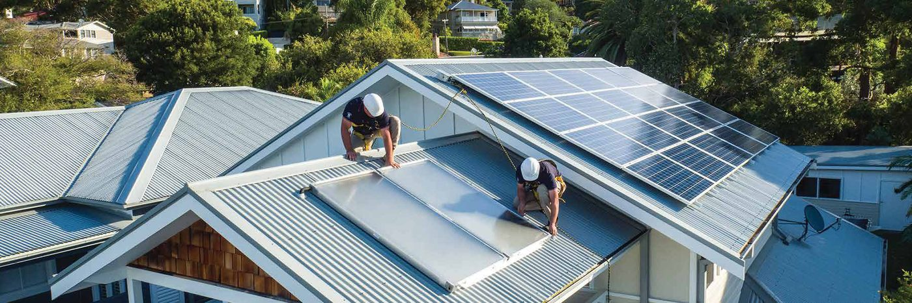
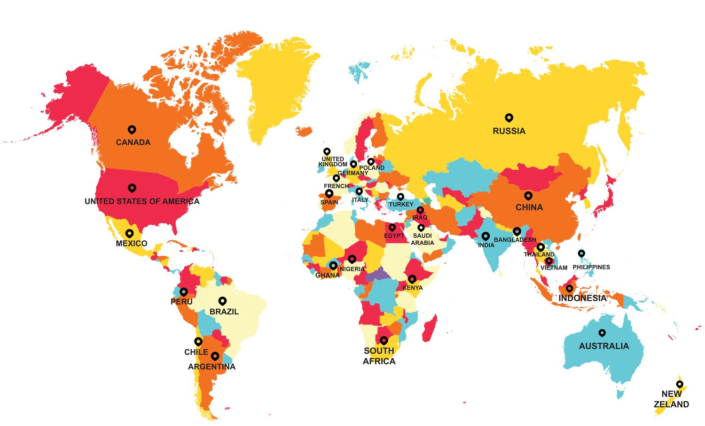
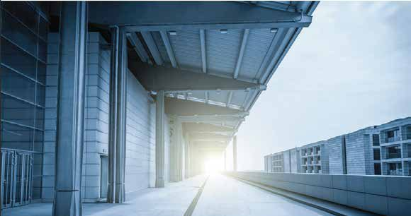
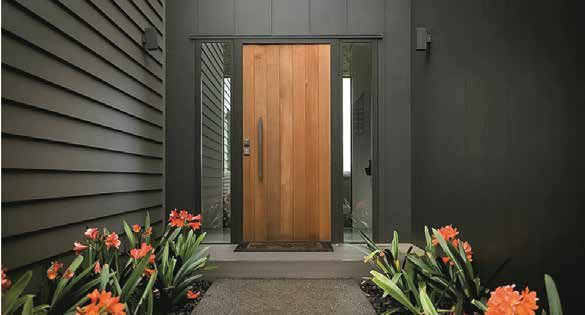
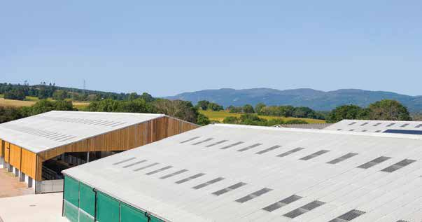
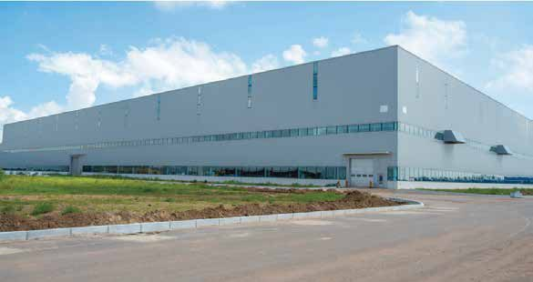
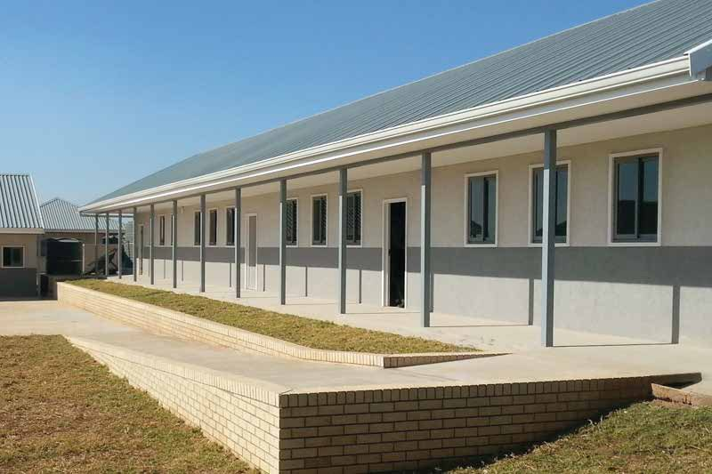
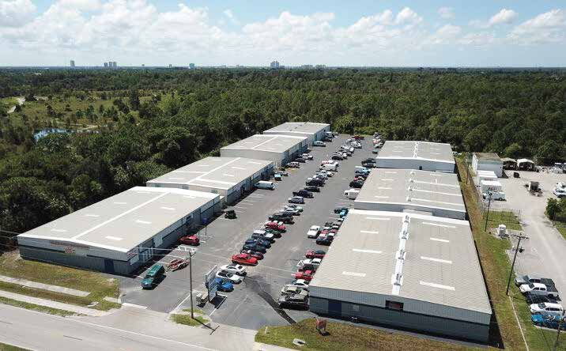

Residential home
Up to 12°C cooler rooms, less rain noise and a roof that does not rust. Natural grey or coloured.
Residential roofing →Solutions
Each application connects roofing performance with comfort, continuity and income. Choose the one that matches your building.
Applications
Open an application for benefits, recommended products and installation tips.
Up to 12°C cooler rooms, less rain noise and a roof that does not rust. Natural grey or coloured.
Residential roofing →Cooler, drier and quieter sheds for cattle and poultry. Resistant to ammonia and humidity.
Farm roofing →Fire resistant to 1200°C, chemical resistant and consistent, with bulk supply for long-span sheds.
Industrial roofing →Farm outcomes
Heat stress lowers welfare and yield. Anwar Cement Sheet Ltd. reports the following outcomes from farm sheds roofed with its sheet, compared with conventional metal roofing.
Figures as published by Anwar Cement Sheet Ltd. Results depend on shed design, ventilation and management.
Where it is used
Beyond homes and farms, the sheet is used wherever a durable, cool and fire-safe roof matters.
Suitable industries
Anwar DuraRoof is applicable for all kinds of industries, particularly those with aggressive, humid or high-heat environments.

Our projects
Client voices
In their own words, from owners who replaced their roofing with Anwar DuraRoof.
Livestock welfare
Figures published by Anwar DuraRoof for dairy and poultry sheds roofed with DuraRoof.

Solar energy
A complete solar solution of panels, batteries and inverters complements DuraRoof precisely.
Our in-house experts devise the most efficient and cost-effective solution for any industry: a 360° solution backed by joint ventures with solar energy providers, with compatible products, technical support and installation guidance.
A global solution
Known for strength, fire resistance and adaptability, cement sheets are a preferred choice in residential, commercial, industrial and agricultural settings worldwide.


Commercial facades that need weather resistance, aesthetic appeal and durability.

False ceilings in office buildings: sound insulation, fire resistance, easy to install.

Barns, poultry farms and storage sheds that need moisture resistance.

Factory partition walls and roofing: fire resistant, strong and cost-effective.

Durable, low-maintenance schools and universities.

Shopping malls and retail outlets, for aesthetic and functional purposes.
Ready to start?
Use the roof finder for a recommendation, or talk to a dealer directly.